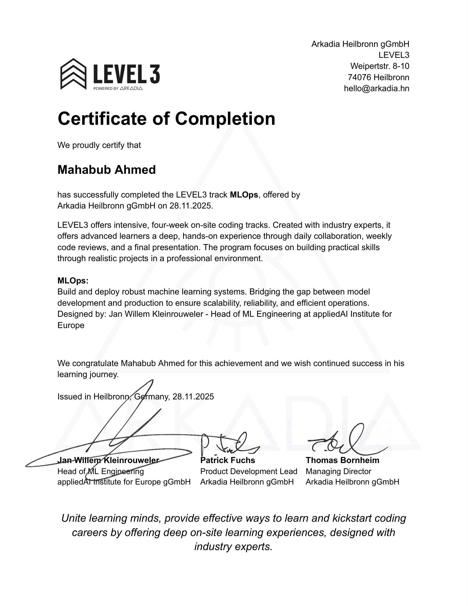
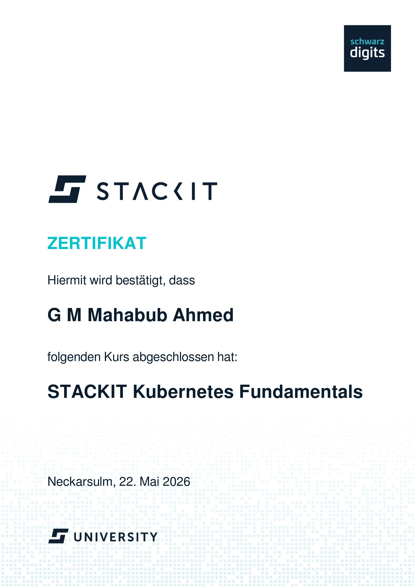

Mahabub Ahmed
Cloud & DevOps Engineer
Building cloud-native infrastructure with Kubernetes, AWS, Terraform, and CI/CD automation.
Professional Summary
Software Engineer with hands-on experience building and deploying containerized applications using Docker and Kubernetes. Skilled in designing CI/CD pipelines with GitHub Actions and Jenkins, and deploying infrastructure on AWS. Passionate about automation, infrastructure as code, and improving system reliability
Technical Skills
Cloud
Containers
Infrastructure as Code
CI/CD
Programming Languages and Frameworks
Monitoring
Portfolio & Projects
Kubernetes-Based Full-Stack Deployment Platform
DevOpsAngular • FastAPI • PostgreSQL • Kubernetes • Helm • Docker • GitHub Actions
Tech Stack
Problem
Needed a repeatable way to deploy a full-stack app with clean environment separation and low manifest duplication.
Deployment Flow
Built frontend and backend containers, pushed them through CI, and deployed to Kubernetes with Helm.
Lessons Learned
Helm improved reuse, and multi-stage builds kept the deployment lightweight and consistent.
Secure Acquisitions REST API
DevOpsNode.js • PostgreSQL • Docker • GitHub Actions • JWT
Tech Stack
Problem
Needed a secure backend with authentication, access control, and a reliable automated build workflow.
Deployment Flow
Ran CI tests, built the Docker image, pushed it through the pipeline, and deployed the API with validation checks.
Lessons Learned
Security middleware should be part of the base design, and release pipelines should validate both code and containers.
MERN Task App
DevOpsFull-Stack Task Management Platform
Tech Stack
Problem
Needed a containerized task app with a stable deployment flow across environments.
Deployment Flow
Built and linked frontend and backend containers with Docker Compose, then used Jenkins to automate testing and delivery.
Lessons Learned
Clear service boundaries make orchestration simpler, and automation improves deployment predictability.
Go Ecommerce
DevOpsE-commerce Microservices Platform
Tech Stack
Problem
Needed a production-ready backend with secure authentication and clear service boundaries.
Deployment Flow
Built the Go services, connected PostgreSQL, containerized the stack, and used Docker for repeatable deployment.
Lessons Learned
Smaller service boundaries improve maintainability, and containers make release behavior more predictable.
AI Agent System
AIMulti-Tool Orchestration Platform
Architecture Diagram

Tech Stack
Problem
Needed a controlled agent workflow with reliable tool routing and decision visibility.
Deployment Flow
Built the orchestration in Python, connected tools with LangGraph, and used Chainlit for debugging.
Lessons Learned
Deterministic routing improves reliability, and observability makes agent workflows easier to maintain.
Voice Order App
AISpeech-to-Order Intelligence Platform
Architecture Diagram

Tech Stack
Problem
Needed a voice workflow that could turn speech into structured orders while handling ambiguity.
Deployment Flow
Built speech-to-text, added entity extraction, and used follow-up prompts to resolve uncertain inputs.
Lessons Learned
Correction logic improves accuracy, and structured prompts reduce parsing errors downstream.
Spotify Prediction
MLOpsEnd-to-End MLOps Pipeline
Architecture Diagram

Tech Stack
Problem
Needed an automated ML workflow for training, tracking, and serving predictions.
Deployment Flow
Orchestrated training and evaluation with Dagster, tracked runs with MLflow, and served predictions through FastAPI and Streamlit.
Lessons Learned
MLOps is more stable when orchestration, tracking, and serving are designed together.
Experience
Software Engineering Intern
PixScrib (Gaming Platform Startup), Germany | Apr 2026 – Present
- Developed backend features and resolved issues for an online gaming platform.
- Implemented GitHub webhook integrations for automated development and deployment workflows.
- Contributed to Docker-based deployment workflows and GitHub Actions pipelines to improve release consistency.
- Supported monitoring, troubleshooting, and production support to improve service reliability.
Assistant Engineer
Vicar Electricals Ltd, Bangladesh | Mar 2018 – Jun 2021
Applied engineering principles to transformer design and assembly. Improved quality control processes, reducing defects and increasing manufacturing consistency.
Education
42 Heilbronn gGmbH
Heilbronn, Germany | Oct 2024 – Present
M.Sc. in IT Management
IU Internationale Hochschule, Germany | 2022 – 2023
B.Sc. in Electrical and Electronic Engineering
AUST, Bangladesh | Dec 2017
Certificates

LEVEL3 - MLOps
2025LEVEL3

STACKIT Kubernetes Fundamentals
2026STACKIT University